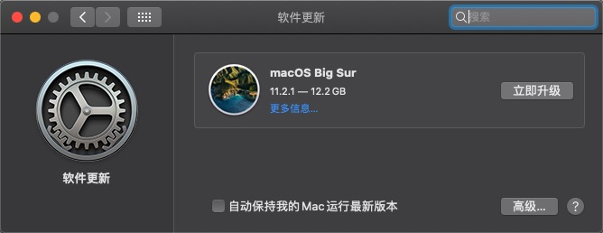
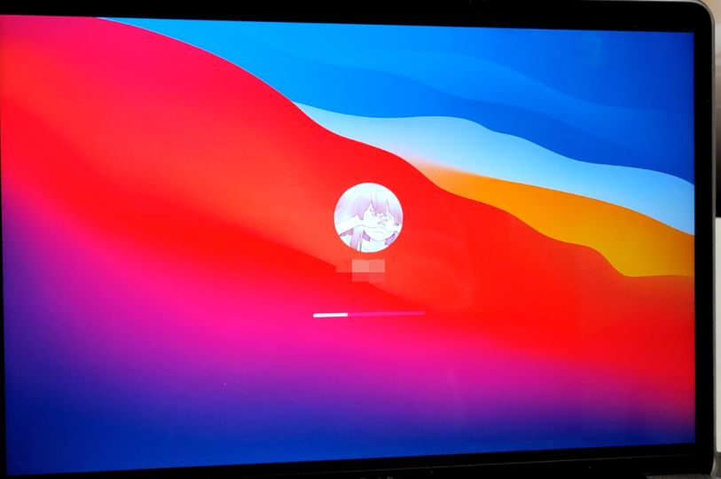

Link: 日遇三险
日遇三险
前言

起
事情因何而起？某天，少年夜行，月明天晴，了无星辰。过贵实验室，停而闲游。见学长维护服务器，学之。大惊其新系统。叙之，知诸事皆宜。软硬件皆无不适之相。乃隐隐生更新之意。
承
于是我选择升级 Bug Sur 体验一下很 tm 舒服的 UI。当然，升级之前的第一件事就是 时间机器备份。移动硬盘除了放 学习资料 之外，还进行了虚拟机和 mac 本体的备份。此时已经进行了 800多G 的冗余备份。所以就先清理一下。
- 清空废纸篓
但是万万没想到啊，对于移动硬盘的抹除速度竟然如此之慢。800G 的东西起码要删了两三个小时。
- 时间机器
时间机器的备份也是要慢到了一种极限。只是准备就要半个多小时。进行时间机器备份的时候 mac 会对它进行限流，以防止占用较多的资源。于是我们可以解除封印。
sudo sysctl debug.lowpri_throttle_enabled=0
解除封印之后只是将备份速度从 Kb 量级拉到了 Mb 量级。想要进行接近 200G 的备份，对于这种 dio 移动硬盘来说还是太勉强了一点。
备份完毕之后就直接开始升级。下载 Big Sur，安装。储存空间不够，把虚拟机放到移动硬盘里。安装，成功。

转
pwner 在驯化 Big Sur 时，所做的第一件事就是 打开虚拟机。parallels desktop 15 是不支持 Bug Sur 的。但是我们可以找一个随处可见的 parallels desktop 16 来进行替代。
崩溃
成年人的崩溃往往就在一瞬间
对，此时第一险来了。parallels desktop 16 毫无例外的翻车了。
- 导入以前的 ubuntu 18.04 之后，tty直接启动不起来。只会冒出一大片黄色的警告⚠️。重启，发现系统进不去。尝试输入 ls 等命令，发现进入的是一种 类似 base system 的界面。
- parallels desktop 启动时，明文列出来：不能联网。那我还用个羁绊？
- 尝试用可联网的启动器进行启动，无果。再次启动，发现没有权限打开。搜索，https://zhuanlan.zhihu.com/p/331816664，安文章方法进行脱壳，无果。无虚拟机只能当场退役，遂放弃。
此时一般有两种选择。一种是继续在 Big Sur 混下去。需要我把虚拟机弄好，并且配置一个稳定的虚拟机环境。但是从一个初始 ubuntu 开始配置的话需要极大的时间成本。另一种是回退版本。为了近期的比赛学习，我选择了第二种。
按照网上的说明，跨系统版本进行回退，需要抹除磁盘。恢复模式进入方式重启时按住 command+R ，进去之后选磁盘工具 抹除磁盘。
此时第二险来了。我抹除磁盘之后重启，企图用时间机器恢复系统。结果直接给👴干崩了。屏幕上出现了一个地球图形。官网是这么说的。
如果您无法从 macOS 恢复功能启动
如果您的 Mac 无法从内建的 macOS 恢复系统启动，它可能会尝试通过互联网从 macOS 恢复功能启动。出现这种情况时，您在启动期间将会看到旋转的地球，而不是 Apple 标志
也就是说，抹除之后重启是不对的。👴就是龙鸣。此时只能进行互联网修复。
然而互联网修复的好像并不是 mac 系统，而是 mac base。所以说此时我还是需要进行时间机器恢复，但至少我可以看到我能用时间机器恢复了。于是直接选时间机器，进行了长达好几个小时的恢复。
恢复完毕之后屏幕上直接出现一个禁止符号🚫。搜索，得出结论。
如果您的 Mac 在启动时出现一个由直线穿过的圆圈
如果出现一个由直线穿过的圆圈，则表示您的启动磁盘包含 Mac 操作系统，但它不是您的 Mac 可以使用的 macOS。
也就是说👴之前是在 Big Sur 进行的互联网恢复，给👴恢复到了 Big Sur 的 base。我还得重新安装一个 catalina 才能进行时间机器恢复。行吧，我安，我安装不行嘛。于是开始了 catalina 的安装。
第三险悄无声息地来了。Catalina 终于安装好了。我寻思这直接进行迁移助理恢复文件吧。恢复，卡住。恢复，一半，卡住。恢复，均在搜索文件那一步卡住不动。
也就是说我必须要对着这个空无一物的 catalina。到这种情况唯一的出路就是再进行一次时间机器回退。但是我此时还不知道时间机器恢复是否会像上次一样出现🚫。于是我做出决定：再恢复一次，不行直接买新电脑。
合
剩余时间13小时……
经历了好几个小时（大约两小时）的恢复，我成功回到了前天下午 5:01 的状态。期间经历了自我的崩溃，作业的重写，夜彳亍。
总之瞎搞是要付出代价的。我们作为盗版的受益者就应该做一些有把握的事情。千万不要因为一时的新鲜而破坏了自己的生产环境。
少年夜行，见新系统，思之。往而试之，磁盘崩。恢复不果，遂重装。然恢复缓。时间机器回退之。果。后遂无升级意。
最新动态
由于在 catalina 中出现了过几个小时自动 fork 炸系统的问题，2021.07.09 我还是升级到了 big sur。并选择妥协使用了 VMware fusion 进行虚拟机配置。